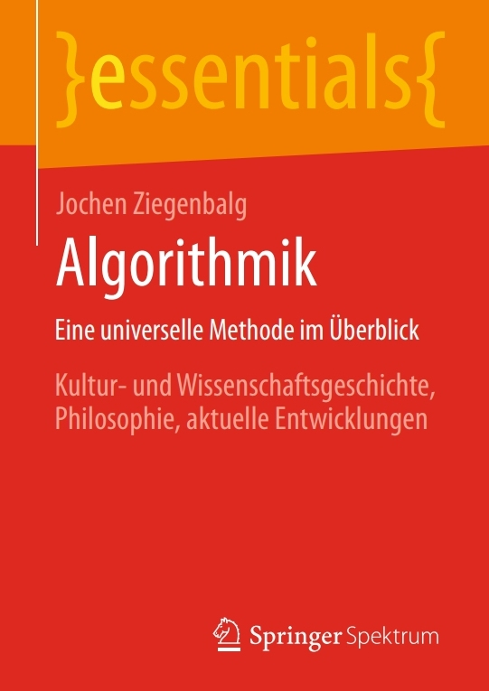

Bücher
An dieser Stelle sind einige Informationen und ergänzende Materialien zu meinen Büchern zusammengestellt. Einige der Bücher stehen auch komplett zum (kostenlosen) Download zur Verfügung.
| 
|
| Algorithmik |
| Eine universelle Methode im Überblick |
| Jochen Ziegenbalg |
| Springer Spektrum |
| © Springer Spektrum, Berlin 2025 |
| ISBN 978-3-662-70803-3 |
| zur Quelle |
| Leseprobe |
|

|
| Figurierte Zahlen (2. Auflage) |
| Veranschaulichung als heuristische Strategie |
| Jochen Ziegenbalg |
| Springer Spektrum |
| © Springer-Verlag GmbH, Berlin 2024 |
| ISBN 978-3-662-67830-5 |
| zur Quelle |
| Leseprobe |
|

|
| Algorithmen (4. Auflage) |
| von Hammurapi bis Gödel |
| Jochen Ziegenbalg, Oliver Ziegenbalg, Bernd Ziegenbalg |
| Springer Spektrum |
| © Springer Fachmedien Wiesbaden GmbH 2016 |
| ISBN 978-3-658-12363-5 |
| Programme aus dem Buch |
| zur Quelle |
| Leseprobe |
|

|
| Elementare Zahlentheorie (2. Auflage) |
| Beispiele, Geschichte, Algorithmen |
| Jochen Ziegenbalg |
| Springer Spektrum |
| © Springer Fachmedien Wiesbaden GmbH 2015 |
| ISBN 978-3-658-12363-5 |
| zur Quelle |
| Leseprobe |
|

|
| Handbuch der Mathematikdidaktik (2. Auflage) |
| Jochen Ziegenbalg |
| Kapitel 11: Algorithmisches Arbeiten |
| Springer Spektrum |
| © Springer-Verlag GmbH, Berlin 2023 |
| ISBN 978-3-662-66603-6 |
| zur Quelle |
|

|
| Dynamische Prozesse |
| und ihre Mathematisierung durch Differenzengleichungen |
| Titel der 2. Auflage: Mathematik für Computeranwendungen |
| Dynamische Prozesse und ihre Mathematisierung durch Differenzengleichungen |
| Rolf Dürr, Jochen Ziegenbalg |
| © Ferdinand Schöningh, Paderborn, 1984 (1. Aufl.) und 1989 (2. Aufl.) |
| ISBN 3-506-37-462-1 |
| Internet Archive |
| Download des Buches |
|

|
| Anwendungsbereiche für Kleincomputer |
| Jochen Ziegenbalg |
| Westermann Verlag |
| © Westermann Verlag Braunschweig 1986 |
| ISBN 3-14-112770-0 |
| Download des Buches |
|